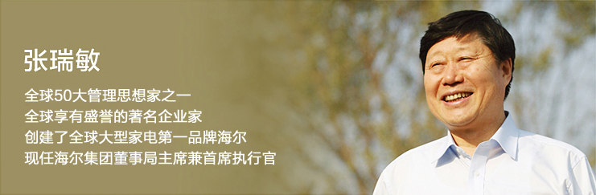

CEO简介
张瑞敏，全球50大管理思想家之一、全球享有盛誉的企业家，海尔集团创始人，现任海尔集团党委书记、董事局主席、首席执行官。中国
共产党第十六、十七、十八届中央委员会候补委员。
因其在管理领域的创新成就，张瑞敏多次获得国际管理思想领域的嘉奖：“全球睿智领袖精英奖”、“IMD管理思想领袖奖”、“亚洲品
牌永远精神领袖奖”、“卡内基卓越领导人奖”、《财富》“全球50位最伟大领袖”。2014年，张瑞敏获得复旦企业管理杰出贡献奖；2015
年，张瑞敏被美国最佳实践研究所（BPI）评为“杰出首席执行官”；并被“管理思想界的奥斯卡”Thinkers50授予杰出成就奖之“最佳理念
实践奖”，张瑞敏是首位获得该奖的中国企业家，同时入选“2015年度Thinkers50榜单”，是唯一同时获得两个奖项的中国企业家。2016
年，张瑞敏被耶鲁大学管理学院授予“传奇领袖奖”，成为年度唯一获奖的中国企业领袖。
1984年，张瑞敏临危受命，接任当时已经资不抵债、濒临倒闭的青岛电冰箱总厂厂长。31年创业创新，张瑞敏始终以创新的企业家精神和
顺应时代潮流的超前战略决策引航海尔。2015年，海尔集团全球营业额达到1887亿元，利润达到180亿，同比增长20%，线上交易额1577
亿，同比增长188%。根据世界权威市场调查机构欧睿国际(Euromonitor)发布2015年全球大型家用电器调查数据显示，海尔大型家用电器
2015年品牌零售量第七次蝉联全球第一。2015年，海尔进入全球品牌TOP100，位列全球白色家电行业品牌第一名。
张瑞敏之所以在国际企业管理领域享有盛誉，是因为他将中国传统文化精髓与西方现代管理思想融会贯通，兼收并蓄、创新发展、自成
一家，他以创新的管理理念为全球管理界探索输出了符合时代特征的商业模式和经典案例，创造了充满竞争力的海尔文化。从“日事日毕、
日清日高”的OEC管理法，到每个人都面向市场的“市场链”管理，再到互联网时代的“人单合一双赢模式 ”，张瑞敏的不断创新赢得了全
球管理界的高度评价。“海尔文化激活休克鱼”案例被写入美国哈佛商学院案例库，张瑞敏也因此成为首位登上哈佛讲坛的中国企业家。
张瑞敏认为，没有成功的企业，只有时代的企业，所谓成功只不过是踏准了时代的节拍，他以企业“组织设计师”的使命，引领海尔经
历了五次发展战略变革。2012年海尔进入第五个发展战略——网络化战略阶段以来，张瑞敏的管理思维再次突破传统管理模式的桎梏，
将“人单合一双赢模式”升级为“人单合一2.0——共创共赢生态圈模式”。“人”从员工升级为攸关各方，“单”从用户价值升级到用户资
源，“双赢”升级为共赢，最终目的是实现共创共赢生态圈的多方共赢增值。因此，互联网时代的海尔已从传统制造家电产品的企业转型为
面向全社会孵化创客的平台，并颠覆传统企业自成体系的封闭系统，成为互联网企业，变成网络互联中的节点，互联互通各种资源，打造共
创共赢新平台，实现攸关各方的共赢增值。
海尔的“人单合一双赢”模式荣获第十八届“全国企业管理现代化创新成果奖”，该奖项被誉为中国企业管理创新的“奥斯卡”。同
时，西方管理界和实践领域对张瑞敏的创新给予了很高认可,认为海尔推进的创新模式是超前的。2012年，张瑞敏应邀赴西班牙IESE商学院、
瑞士IMD商学院演讲；2013年，张瑞敏作为唯一受邀中国企业家出席美国管理学会（AOM）第73届年会并做主题演讲；2015年，张瑞敏作
为唯一受邀的中国企业家参加德鲁克全球论坛并演讲；均受到热烈反响。
张瑞敏主要荣誉：
2016年，年度唯一获得“传奇领袖奖”的中国企业家，耶鲁大学管理学院
2015年，同时获得“2015年全球最具影响力管理思想家”和“最佳理念实践奖”两项大奖，Thinkers50
2015年，“杰出首席执行官”，美国最佳实践研究所（BPI）
2014年，“复旦企业管理杰出贡献奖”的第一位获奖者，复旦管理学奖励基金会
2014年，“最具改革动力企业家” ，凤凰财经峰会
2014年，“全球50位最伟大领袖”奖，美国《财富》杂志
2013年，美国管理学会（AOM）第73届年会唯一获邀作主题演讲的企业家
2013年，“亚洲品牌永远精神领袖奖” ，亚洲品牌盛典
2013年，“2012中国创新人物”， 建设创新型国家战略推进委员会
2012年，“卡内基卓越领导人奖”，卡内基百年庆典
2012年，“管理思想领袖奖” ， 欧洲顶级商学院瑞士IMD
2011年，“睿智领袖精英奖” ， 全球政商领袖基金会
2010年，“中国最具影响力商界领袖” ， 美国《财富》（中文版）
2009年，“希望工程20年特殊贡献奖， 共青团中央
2009年，“中国最具影响力40人” ， 美国《商业周刊》
2009年，“十年商业领袖人物”，CCTV 经济年度人物
2005年，“全球50位最受尊敬的商业领袖” ， 英国《金融时报》
2004年，“亚洲25位最具影响力的商界领袖” ， 美国《财富》杂志
2002年，“全球杰出企业领袖” ， 世界性慈善组织国际联合劝募协会
2001年，“全国优秀共产党员” ， 中共中央
1999年，“全球30位最具声望的企业家” ， 英国《金融时报》
1998年， 第一个登上哈佛讲坛的中国企业家